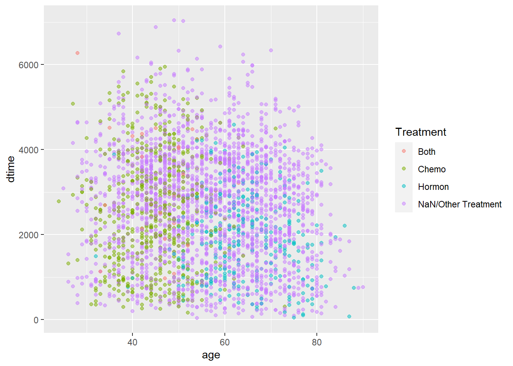
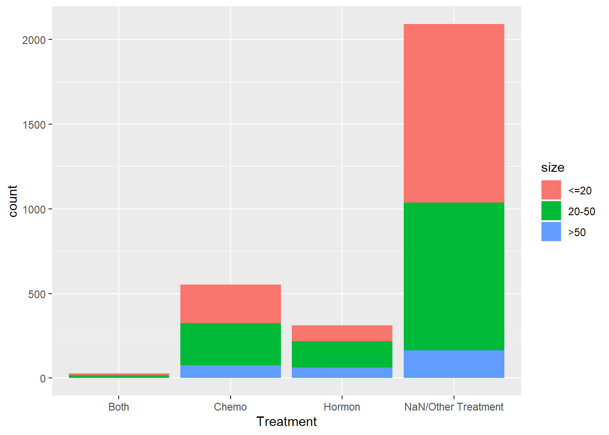
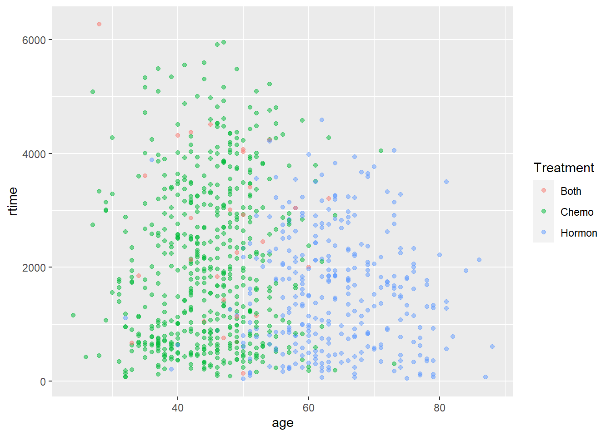

3.2 Kaplan-Miere
3.2.1 size vs. Survival Times
size vs. dtime
KM_None_Death <- survfit(Surv(dtime, death) ~ size, data = rotterdam)
plot(KM_None_Death, conf.type = "plain", col = c("black","red","blue"), xlab="Days", ylab="Survival")
legend(6000, 1, legend=c("<=20", "20-50", ">50"),
col=c("black", "red", "blue"), lty=1, cex=0.8,
title="Tumor Size", text.font=6)
size vs. rtime
KM_None_Recur <- survfit(Surv(rtime, recur) ~ size, data = rotterdam)
plot(KM_None_Recur, conf.type = "plain", col = c("black","red","blue"), xlab="Days", ylab="Survival")
legend(6000, 1, legend=c("<=20", "20-50", ">50"),
col=c("blue", "red", "blue"), lty=1, cex=0.8,
title="Tumor Size", text.font=6)
3.2.2 Nodes_level vs. Survival Times
Nodes_level vs. dtime
KM_None_Death <- survfit(Surv(dtime, death) ~ Nodes_level, data = rotterdam)
plot(KM_None_Death, conf.type = "plain", col = c("black","red","blue","orange"), xlab="Days", ylab="Survival")
legend(5000, 1, legend=c("Both", "Chemo","Hormon", "NaN/Other Treatment"),
col=c("black", "red", "blue", "orange"), lty=1, cex=0.8,
title="Treatment Group", text.font=6)
Nodes_level vs. rtime
KM_None_Recur <- survfit(Surv(rtime, recur) ~ Nodes_level, data = rotterdam)
plot(KM_None_Recur, conf.type = "plain", col = c("black","red","blue","orange"), xlab="Days", ylab="Survival")
legend(5000, 1, legend=c("Both", "Chemo","Hormon", "NaN/Other Treatment"),
col=c("black", "red", "blue", "orange"), lty=1, cex=0.8,
title="Treatment Group", text.font=6)
3.2.3 Treatment vs. Survival Times
Treatment vs. dtime
KM_Treatment_Death <- survfit(Surv(dtime, death) ~ Treatment, data = rotterdam)
plot(KM_Treatment_Death, conf.int = FALSE, col = c("black", "red", "blue", "orange"), xlab="Days", ylab="Survival")
legend(1, 0.4, legend=c("Both", "Chemo","Hormon", "NaN/Other Treatment"),
col=c("black", "red", "blue", "orange"), lty=1, cex=0.8,
title="Treatment Group", text.font=6)
Treatment vs. rtime
KM_Treatment_Recur <- survfit(Surv(rtime, recur) ~ Treatment, data = rotterdam)
plot(KM_Treatment_Recur, conf.int = FALSE, col = c("black", "red", "blue", "orange"), xlab="Days", ylab="Survival")
legend(1, 0.4, legend=c("Both", "Chemo","Hormon", "NaN/Other Treatment"),
col=c("black", "red", "blue", "orange"), lty=1, cex=0.8,
title="Treatment Group", text.font=6)